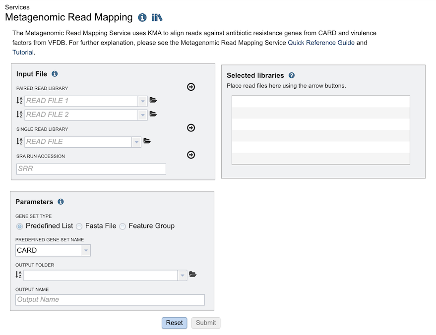
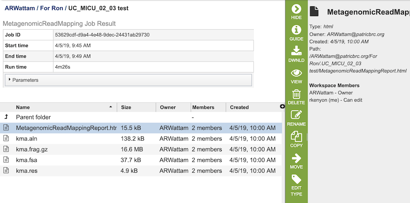
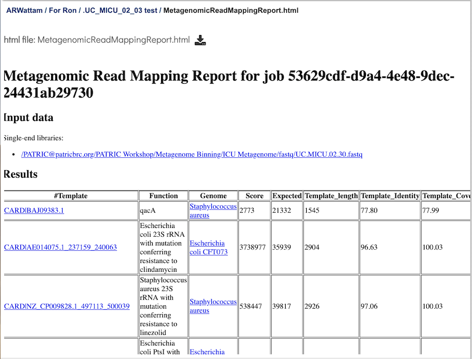

Metagenomic Read Mapping Service¶
Overview¶
The Metagenomic Read Mapping Service uses KMA to align reads against antibiotic resistance genes, virulence factors, or other custom sets of genes.
See also¶
Using the Metagenomic Read Mapping Service¶
The Metagenomic Read Mapping submenu option under the Services main menu (Metagenomics category) opens the Metagenomic Read Mapping Service input form (shown below). Note: You must be logged into BV-BRC to use this service.

Options¶

Input File¶
Paired read library¶
Read File 1 & 2: Many paired read libraries are given as file pairs, with each file containing half of each read pair. Paired read files are expected to be sorted such that each read in a pair occurs in the same Nth position as its mate in their respective files. These files are specified as READ FILE 1 and READ FILE 2. For a given file pair, the selection of which file is READ 1 and which is READ 2 does not matter.
Single read library¶
Read File: FASTQ file containing reads.
SRA run accession¶
Allows direct upload of read files from the NCBI Sequence Read Archive to the service. Entering the SRR accession number and clicking the arrow will add the file to the selected libraries box for use in the assembly.
Selected libraries¶
Read files to be mapped.
Parameters¶
Predefined Gene Set Name: A pre-built set of genes against which reads are mapped. Two options are available:
CARD - Antibiotic resistence gene set from the Comprehensive Antibiotic Resistance Database
VFDB - Virulence factor gene set from the Virulence Factor Database
Feature Group: Reads can also be mapped to a previously created groups of features (genes or proteins). There are several ways to navigate to the feature group. Clicking on the drop-down box will show the feature groups, with the most recently created groups shown first. Clicking on the desired group will fill the box with that name.
Fasta File: Reads can be mapped to a fasta file describing an dna sequence. The file must be present in BV-BRC, which would be located by entering the name in the text box, clicking on the drop-down box, or navigating within the workspace. Inorder to select a file for this service the file type must be specified as one of our fasta types (aligned_dna_fasta, or feature_dna_fasta).
Output Folder: Workspace folder where the results will be saved.
Output Name: User-provided name used to uniquely identify results.
Output Results¶

The Metagenomic Read Mapping Service generates several files that are deposited in the Private Workspace in the designated Output Folder. These include
MetagenomicReadMappingReport.html - A web-browser-friendly report that summarizes the results of the service (see description and image below).
kma.aln - The consensus alignment of the reads against their template.
kma.frag.gz - Mapping information on each mapped read, columns are: read, number of equally well mapping templates, mapping score, start position, end position (w.r.t. template), the choosen template.
kma.fsa - The consensus sequences drawn from the alignments.
kma.res - A result overview giving the most common statistics for each mapped template.
kma.mat.gz - Base counts on each position in each template, (only if “-matrix” is enabled).
Metagenomic Read Mapping Report Output¶

This page is a web-friendly report that summarizes the output of MKA. It provides a link to the input data, an interactive chart view (see description below), and a table of the reference genes mapped. The columns in the table are as follows:
Template - Identifier of the template (reference gene) sequence that match the query reads. Clicking on any of the template identifiers in the first column will open a Specialty Gene List View that shows all the genes in BV-BRC that have BLAT hits to the same template gene.
Function - Template gene function.
Genome: Genome that contains template gene. Clicking on the name in the Genome column will open a new tab that shows the Genome List view, which shows all the genomes in BV-BRC that fall under the same taxonomy of the selected name.
Score - Global alignment score of the template.
Expected - Expected alignment score if all mapping reads were smeared over all templates in the database.
Template_length - Template gene length in nucleotides.
Template_Identity - Percent identity between the query and template sequence, divided the length of the matching template sequence
Template_Coverage - Percent of the template that is covered by the query
Query_Identity - Percent identity between the query and template sequence, over the length of the matching query sequence
Query_Coverage - Length of the matching query sequnce divided by the template length
Depth - Number of times the template has been covered by the query.
q_value - Quantile from McNemars test, to test whether the current template is a significant hit.
p_value - p-vaue corresponding to the obtained q_value
References¶
Kent, W. James. “BLAT—the BLAST-like alignment tool.” Genome research 12.4 (2002): 656-664.
Jia, Baofeng, et al. “CARD 2017: expansion and model-centric curation of the comprehensive antibiotic resistance database.” Nucleic acids research (2016): gkw1004.
Liu, Bo, et al. “VFDB 2019: a comparative pathogenomic platform with an interactive web interface.” Nucleic acids research 47.D1 (2018): D687-D692.
Philip T.L.C. Clausen, Frank M. Aarestrup & Ole Lund, “Rapid and precise alignment of raw reads against redundant databases with KMA”, BMC Bioinformatics, 2018;19:307.